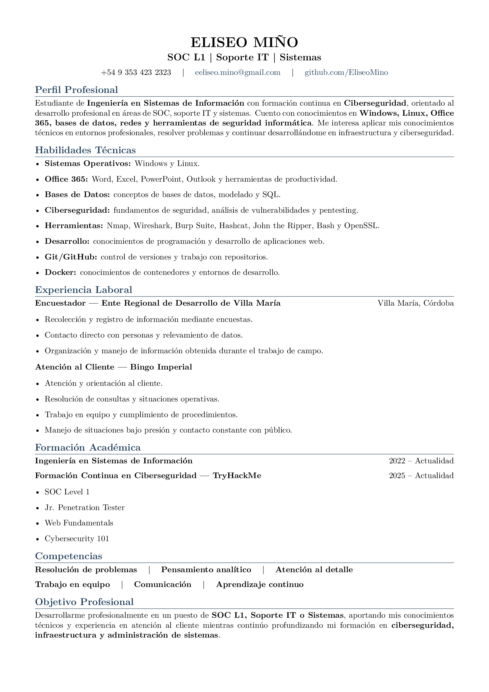

Eliseo Miño
Ingeniería en Sistemas · Desarrollo · Ciberseguridad
Transformación de necesidades y problemas tecnológicos en soluciones concretas, mediante análisis, diseño, desarrollo e implementación de sistemas.
Sobre mí
Soy estudiante de Ingeniería en Sistemas en la UTN FRVM (2022 — actualidad). Me formo en desarrollo backend, Linux, sistemas, redes y ciberseguridad, con foco en entender las cosas desde la base.
Misión
Aprender con profundidad cómo funcionan los sistemas, las redes y el código; escribir software sólido y formarme continuamente en seguridad informática para aplicar ese conocimiento en proyectos reales.
Habilidades técnicas
Áreas en las que estoy formándome:
Herramientas
Herramientas que uso en el estudio y la práctica técnica:
Proyectos
Esta sección se completará con proyectos reales a medida que avance mi formación. Los proyectos se publicarán también en GitHub.
Security Lab
Prácticas guiadas de ciberseguridad realizadas en entornos de laboratorio educativos (TryHackMe):
Certificados
Curriculum Vitae

Formación y certificaciones
- Ingeniería en Sistemas — UTN FRVM (Universidad Tecnológica Nacional, Facultad Regional Villa María) · 2022 — actualidad